-
ToDo List Management
7:03:07 PM / 00:00:10:067 Pass
ToDo List Management
03.01.2023 7:03:07 PM 03.01.2023 7:03:17 PM 00:00:10:067 · #test-id=1PassMVC_USER should be able to add items in ToDo List and view the added itemGiven MVC_USER launch the urlstepdef.Hooks.captureScreenshot(io.cucumber.java.Scenario)Screen0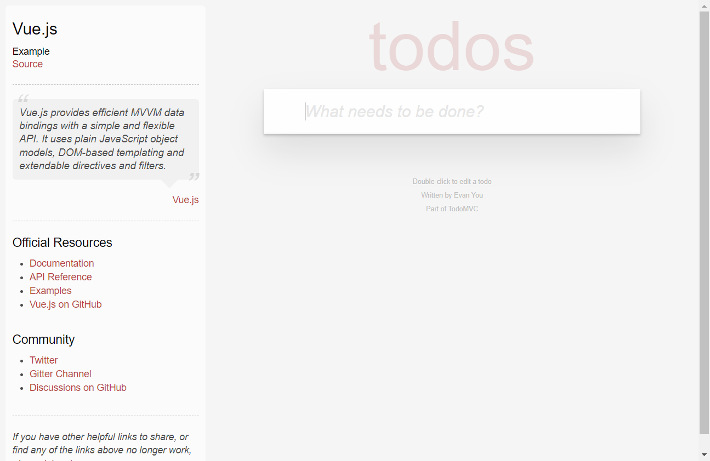When MVC_USER add the ToDo item "ItemContent1"stepdef.Hooks.captureScreenshot(io.cucumber.java.Scenario)Screen1Then MVC_USER should be able to view the added ToDo item "ItemContent1"stepdef.Hooks.captureScreenshot(io.cucumber.java.Scenario)Screen2Then MVC_USER clicks on active button and ToDo item count must be "1"stepdef.Hooks.captureScreenshot(io.cucumber.java.Scenario)Screen3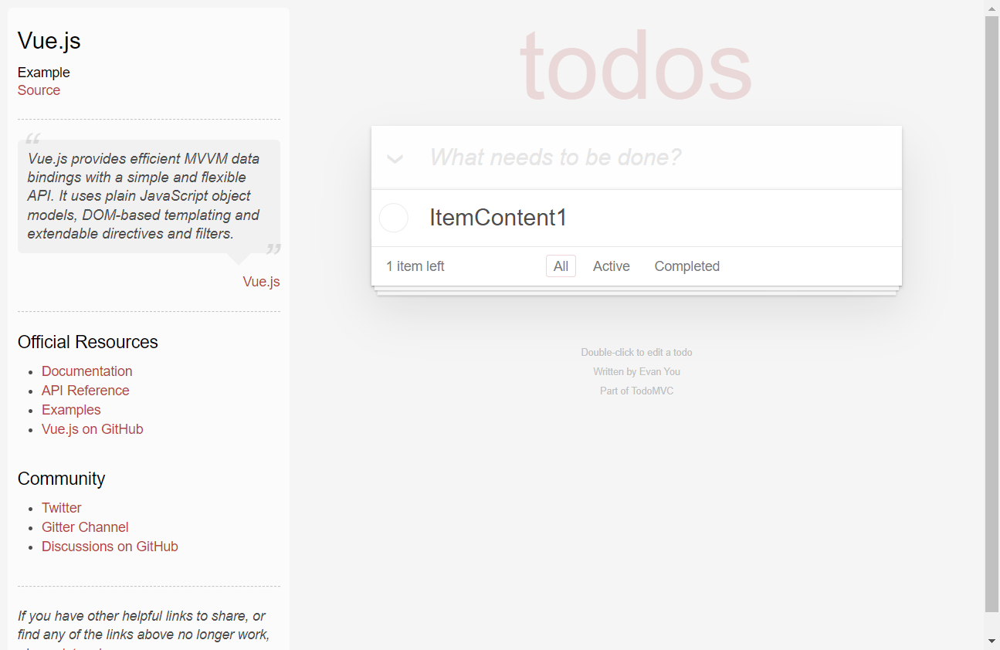When MVC_USER add the ToDo item "ItemContent2"stepdef.Hooks.captureScreenshot(io.cucumber.java.Scenario)Screen4Then MVC_USER should be able to view the added ToDo item "ItemContent2"stepdef.Hooks.captureScreenshot(io.cucumber.java.Scenario)Screen5Then MVC_USER clicks on active button and ToDo item count must be "2"stepdef.Hooks.captureScreenshot(io.cucumber.java.Scenario)Screen6 When MVC_USER add the ToDo item "ItemContent3"stepdef.Hooks.captureScreenshot(io.cucumber.java.Scenario)Screen7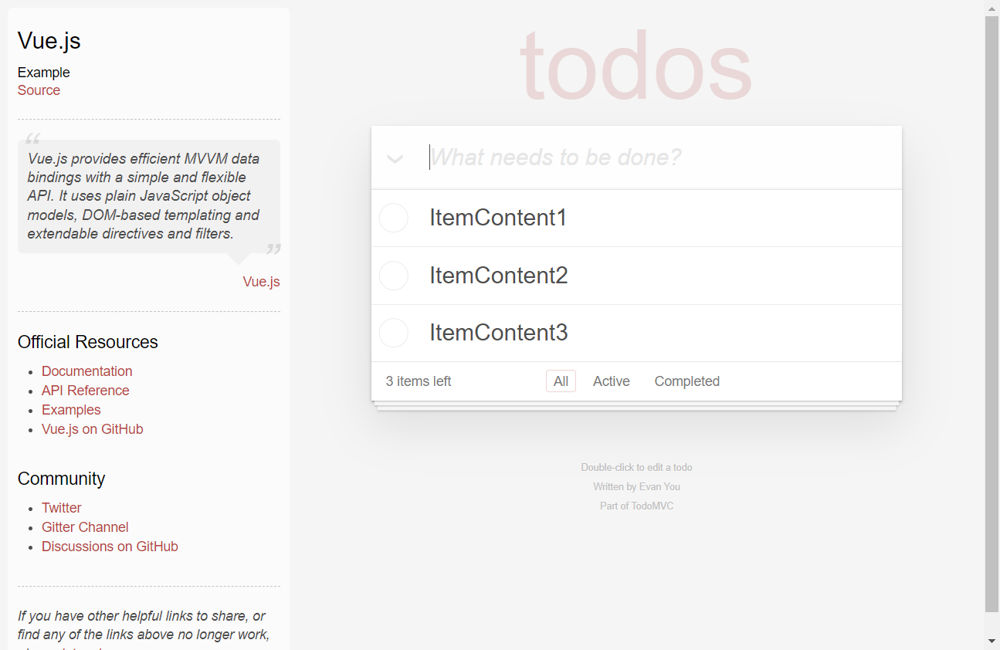Then MVC_USER should be able to view the added ToDo item "ItemContent3"stepdef.Hooks.captureScreenshot(io.cucumber.java.Scenario)Screen8
When MVC_USER add the ToDo item "ItemContent3"stepdef.Hooks.captureScreenshot(io.cucumber.java.Scenario)Screen7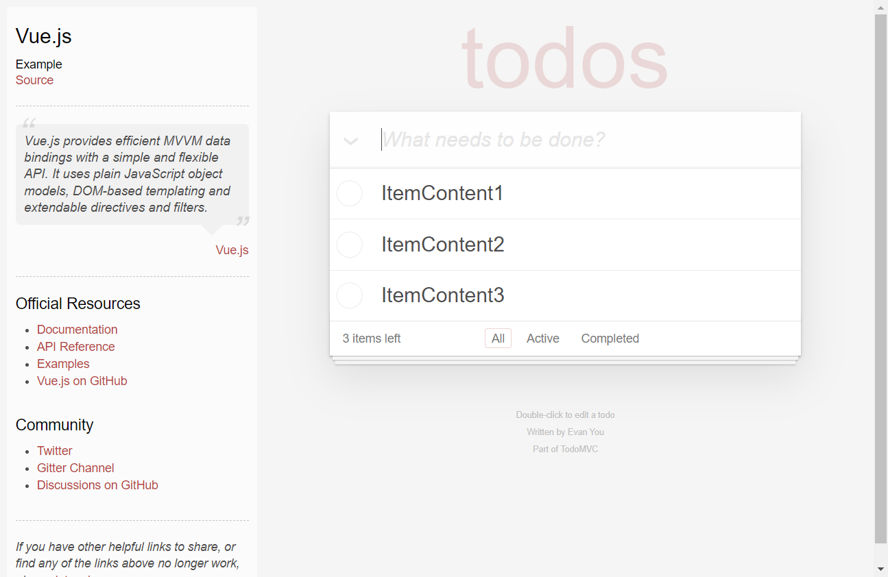Then MVC_USER should be able to view the added ToDo item "ItemContent3"stepdef.Hooks.captureScreenshot(io.cucumber.java.Scenario)Screen8 Then MVC_USER clicks on active button and ToDo item count must be "3"stepdef.Hooks.captureScreenshot(io.cucumber.java.Scenario)Screen9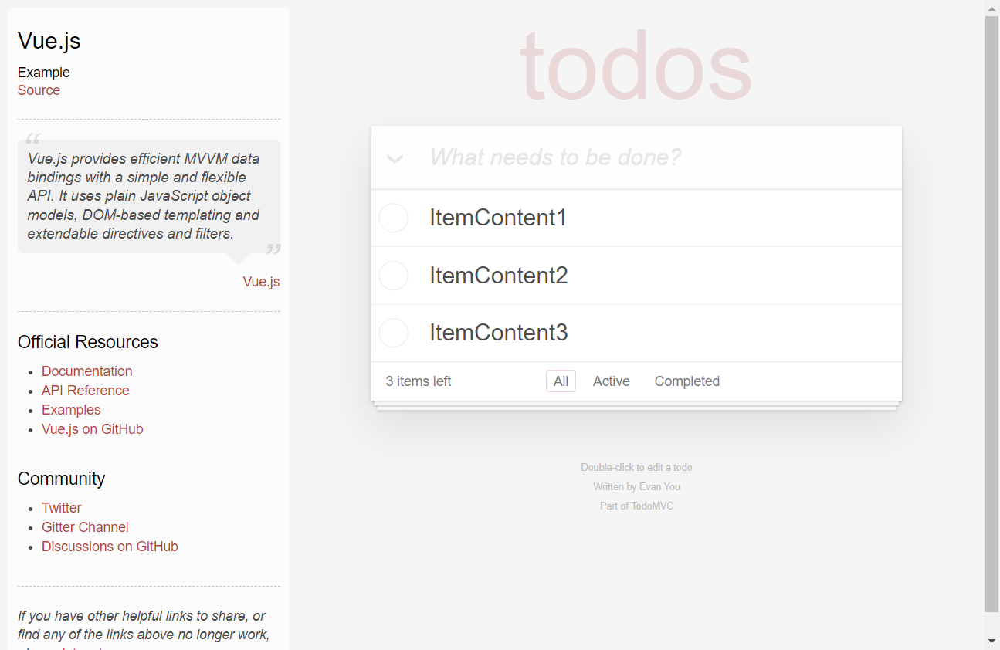PassMVC_USER should be able to delete items from ToDo List and validate the removalGiven MVC_USER launch the urlstepdef.Hooks.captureScreenshot(io.cucumber.java.Scenario)Screen10When MVC_USER delete the first ToDo itemstepdef.Hooks.captureScreenshot(io.cucumber.java.Scenario)Screen11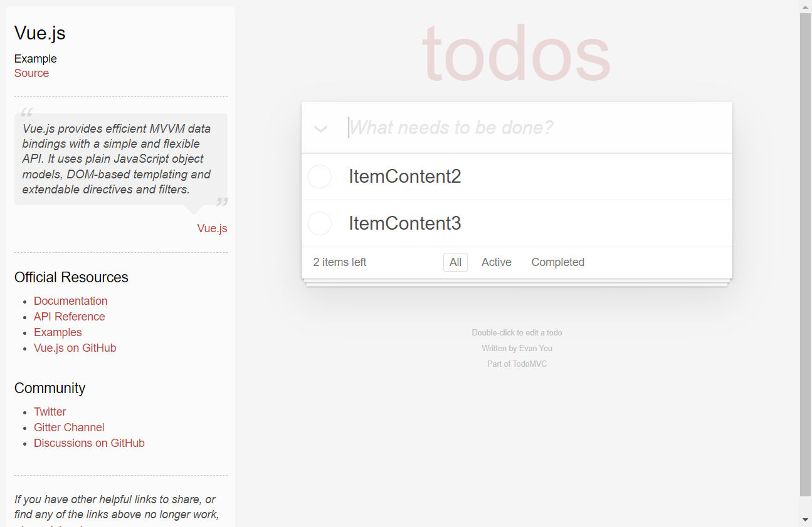Then MVC_USER should not be able to view the added ToDo item "ItemContent1"stepdef.Hooks.captureScreenshot(io.cucumber.java.Scenario)Screen12Then MVC_USER clicks on active button and ToDo item count must be "2"stepdef.Hooks.captureScreenshot(io.cucumber.java.Scenario)Screen13PassMVC_USER should be able to move the ToDoItem to completed statusGiven MVC_USER launch the urlstepdef.Hooks.captureScreenshot(io.cucumber.java.Scenario)Screen14When MVC_USER complete the first ToDo itemstepdef.Hooks.captureScreenshot(io.cucumber.java.Scenario)Screen15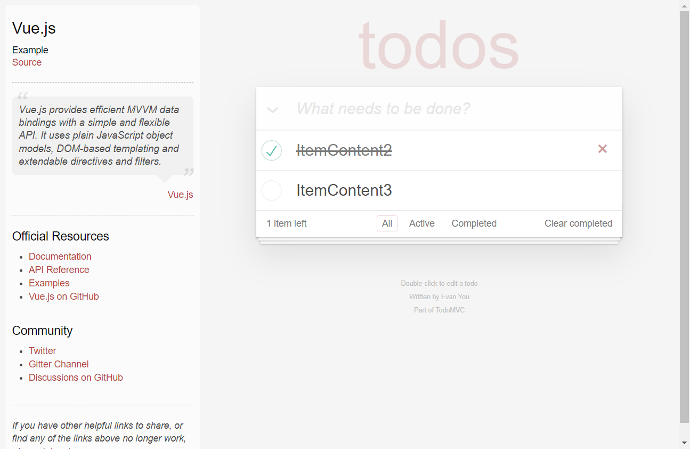Then MVC_USER should be able to view the ToDo item under completed section "ItemContent2"stepdef.Hooks.captureScreenshot(io.cucumber.java.Scenario)Screen16
Then MVC_USER clicks on active button and ToDo item count must be "3"stepdef.Hooks.captureScreenshot(io.cucumber.java.Scenario)Screen9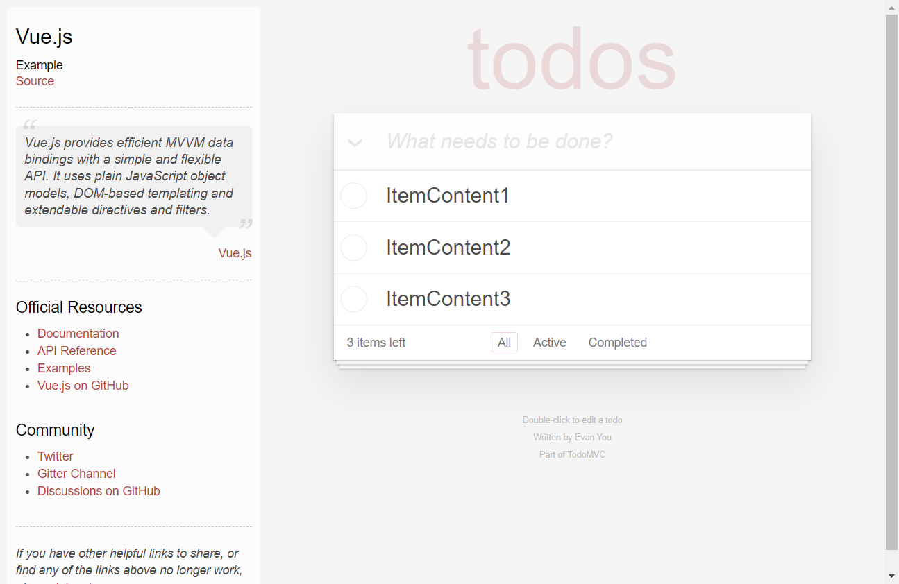PassMVC_USER should be able to delete items from ToDo List and validate the removalGiven MVC_USER launch the urlstepdef.Hooks.captureScreenshot(io.cucumber.java.Scenario)Screen10When MVC_USER delete the first ToDo itemstepdef.Hooks.captureScreenshot(io.cucumber.java.Scenario)Screen11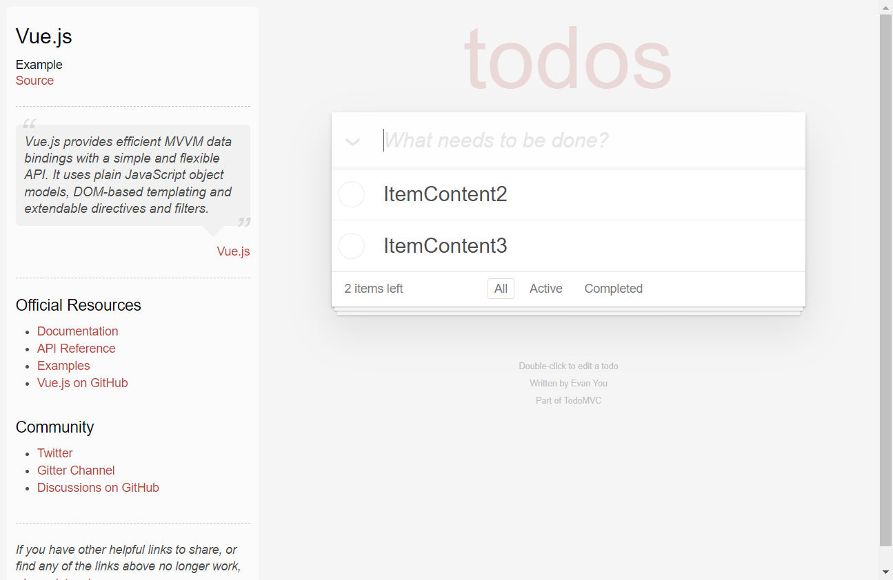Then MVC_USER should not be able to view the added ToDo item "ItemContent1"stepdef.Hooks.captureScreenshot(io.cucumber.java.Scenario)Screen12Then MVC_USER clicks on active button and ToDo item count must be "2"stepdef.Hooks.captureScreenshot(io.cucumber.java.Scenario)Screen13PassMVC_USER should be able to move the ToDoItem to completed statusGiven MVC_USER launch the urlstepdef.Hooks.captureScreenshot(io.cucumber.java.Scenario)Screen14When MVC_USER complete the first ToDo itemstepdef.Hooks.captureScreenshot(io.cucumber.java.Scenario)Screen15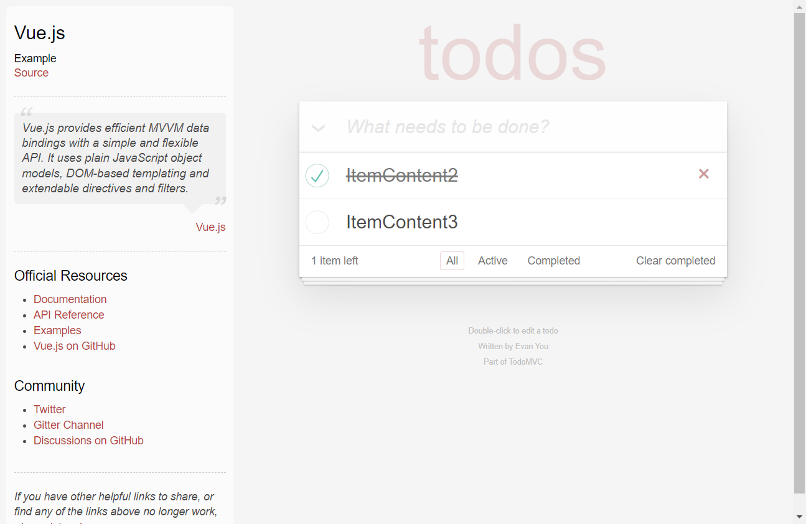Then MVC_USER should be able to view the ToDo item under completed section "ItemContent2"stepdef.Hooks.captureScreenshot(io.cucumber.java.Scenario)Screen16 Then MVC_USER clicks on active button and ToDo item count must be "1"stepdef.Hooks.captureScreenshot(io.cucumber.java.Scenario)Screen17
Then MVC_USER clicks on active button and ToDo item count must be "1"stepdef.Hooks.captureScreenshot(io.cucumber.java.Scenario)Screen17 PassMVC_USER should be able to view the ToDoItems from all statuses and clear the completed ItemsGiven MVC_USER launch the urlstepdef.Hooks.captureScreenshot(io.cucumber.java.Scenario)Screen18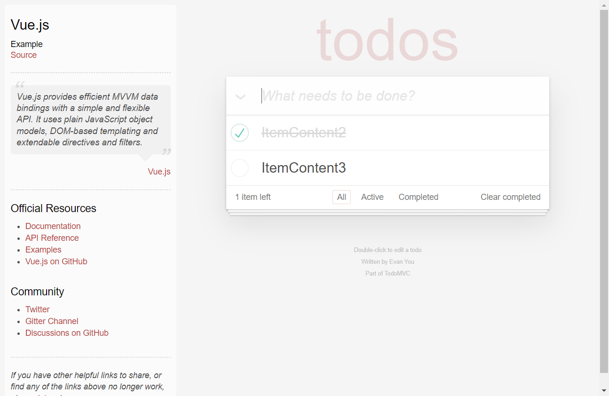Then MVC_USER should be able to view the ToDo item under active section "ItemContent3"stepdef.Hooks.captureScreenshot(io.cucumber.java.Scenario)Screen19
PassMVC_USER should be able to view the ToDoItems from all statuses and clear the completed ItemsGiven MVC_USER launch the urlstepdef.Hooks.captureScreenshot(io.cucumber.java.Scenario)Screen18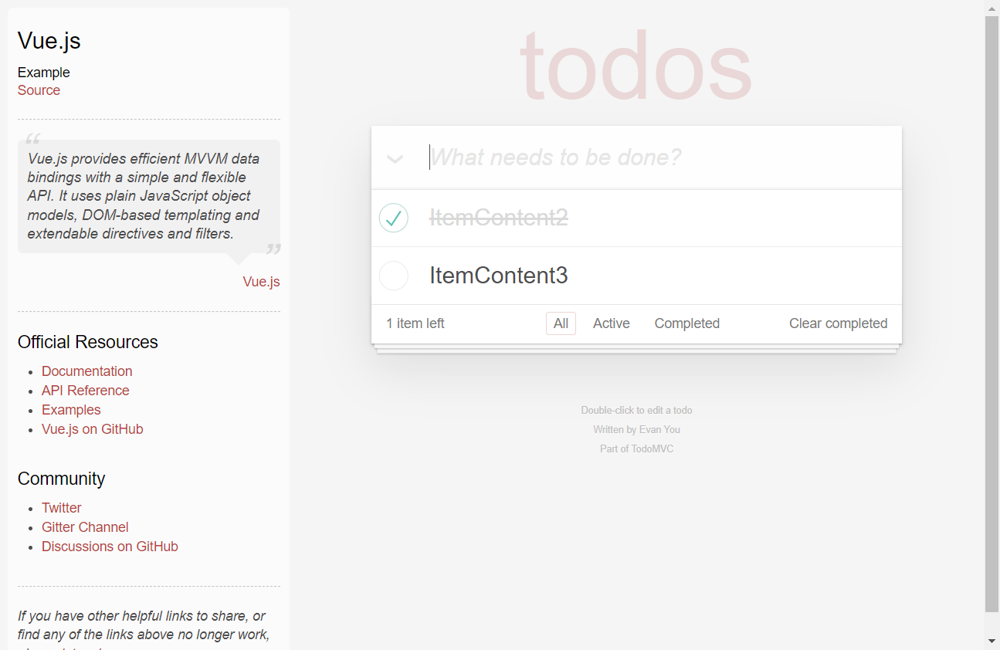Then MVC_USER should be able to view the ToDo item under active section "ItemContent3"stepdef.Hooks.captureScreenshot(io.cucumber.java.Scenario)Screen19 Then MVC_USER clicks on active button and ToDo item count must be "1"stepdef.Hooks.captureScreenshot(io.cucumber.java.Scenario)Screen20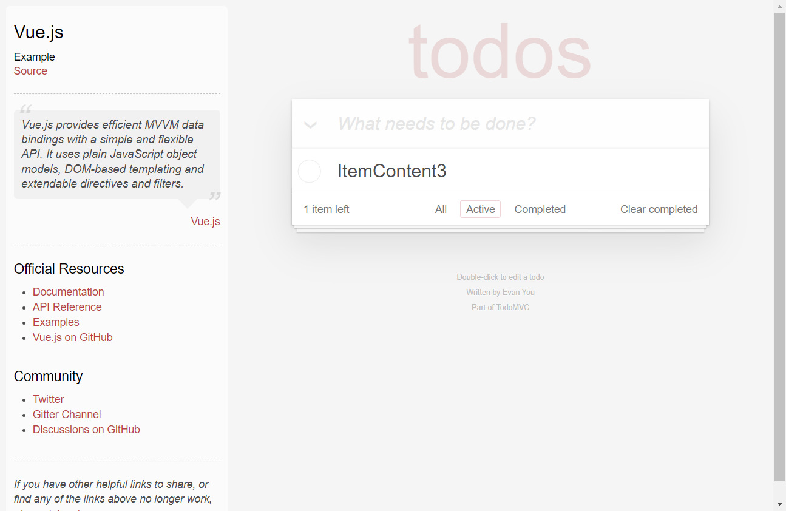Then MVC_USER should be able to view the ToDo item under completed section "ItemContent2"stepdef.Hooks.captureScreenshot(io.cucumber.java.Scenario)Screen21
Then MVC_USER clicks on active button and ToDo item count must be "1"stepdef.Hooks.captureScreenshot(io.cucumber.java.Scenario)Screen20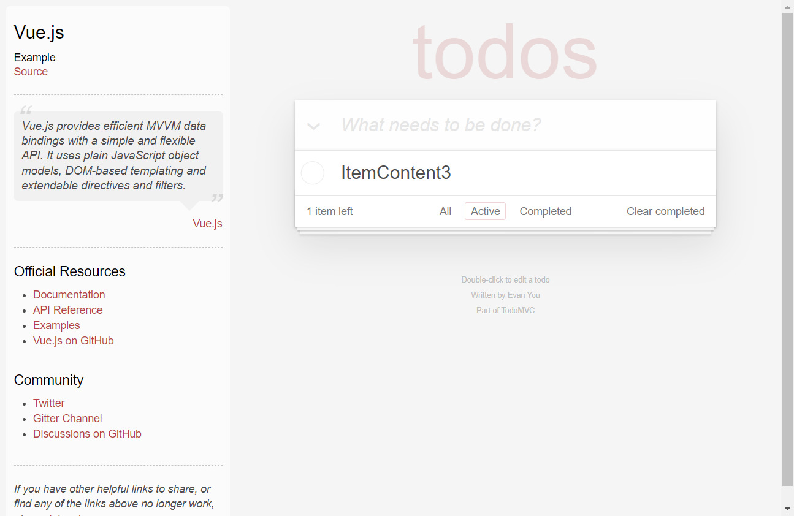Then MVC_USER should be able to view the ToDo item under completed section "ItemContent2"stepdef.Hooks.captureScreenshot(io.cucumber.java.Scenario)Screen21 Then MVC_USER clicks on completed button and ToDo item count must be "1"stepdef.Hooks.captureScreenshot(io.cucumber.java.Scenario)Screen22And MVC_USER should be able to clear the completed itemsstepdef.Hooks.captureScreenshot(io.cucumber.java.Scenario)Screen23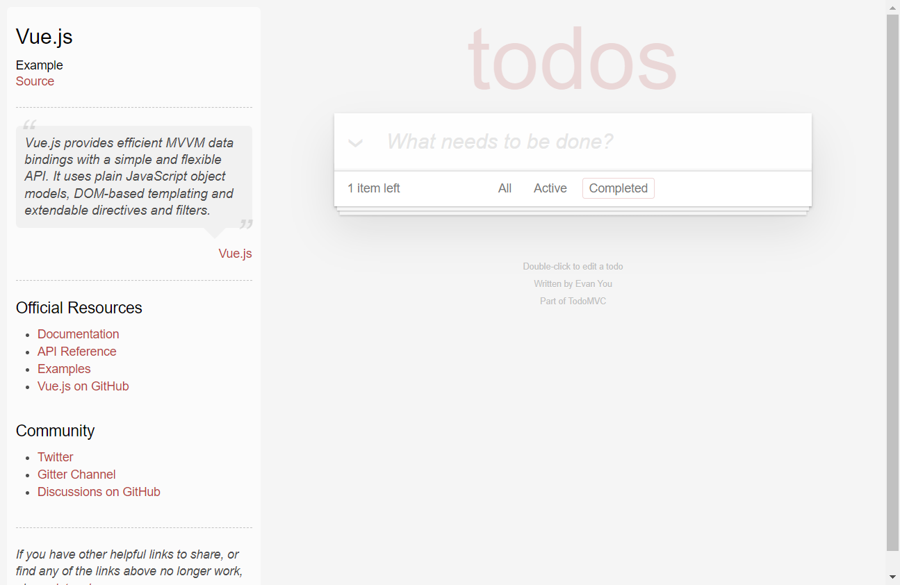
Then MVC_USER clicks on completed button and ToDo item count must be "1"stepdef.Hooks.captureScreenshot(io.cucumber.java.Scenario)Screen22And MVC_USER should be able to clear the completed itemsstepdef.Hooks.captureScreenshot(io.cucumber.java.Scenario)Screen23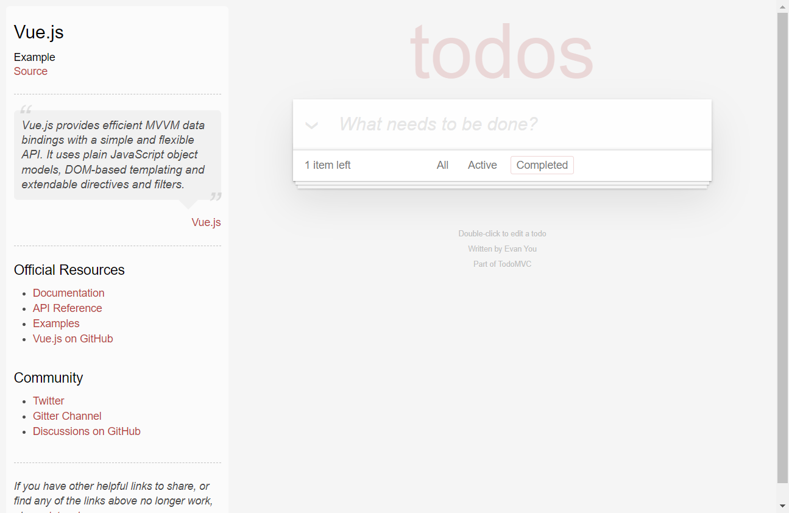 -
ToDo List UI
7:03:17 PM / 00:00:05:878 Pass
ToDo List UI
03.01.2023 7:03:17 PM 03.01.2023 7:03:23 PM 00:00:05:878 · #test-id=54PassMVC_USER should be able to add items of size as per the boundaries setGiven MVC_USER launch the urlstepdef.Hooks.captureScreenshot(io.cucumber.java.Scenario)Screen24When MVC_USER complete the first ToDo itemstepdef.Hooks.captureScreenshot(io.cucumber.java.Scenario)Screen25Then User add the ToDo item of different sizes1 2 32 64 stepdef.Hooks.captureScreenshot(io.cucumber.java.Scenario)Screen26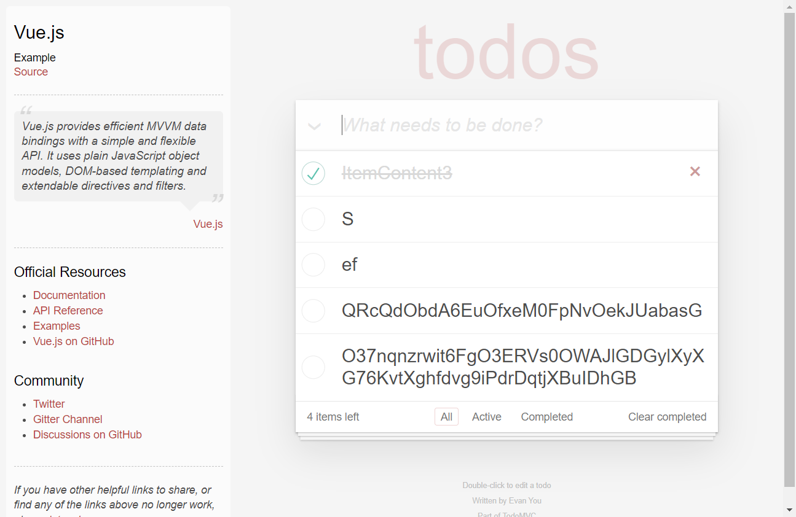Then MVC_USER clicks on active button and ToDo item count must be "4"stepdef.Hooks.captureScreenshot(io.cucumber.java.Scenario)Screen27PassMVC_USER should be able to view all significant sections of UIGiven MVC_USER launch the urlstepdef.Hooks.captureScreenshot(io.cucumber.java.Scenario)Screen28Then MVC_USER should be able to view "todos" as headingstepdef.Hooks.captureScreenshot(io.cucumber.java.Scenario)Screen29 Then MVC_USER should be able to view "What needs to be done?" as placeholder for ToDoItem textboxstepdef.Hooks.captureScreenshot(io.cucumber.java.Scenario)Screen30Then MVC_USER should be able to view the left pane with different sections
Then MVC_USER should be able to view "What needs to be done?" as placeholder for ToDoItem textboxstepdef.Hooks.captureScreenshot(io.cucumber.java.Scenario)Screen30Then MVC_USER should be able to view the left pane with different sectionsOfficial Resources Community stepdef.Hooks.captureScreenshot(io.cucumber.java.Scenario)Screen31Then MVC_USER should be able to view the footer with different sectionsDouble-click to edit a todo stepdef.Hooks.captureScreenshot(io.cucumber.java.Scenario)Screen32 PassMVC_USER should be able to refresh page and retain the listGiven MVC_USER launch the urlstepdef.Hooks.captureScreenshot(io.cucumber.java.Scenario)Screen33
PassMVC_USER should be able to refresh page and retain the listGiven MVC_USER launch the urlstepdef.Hooks.captureScreenshot(io.cucumber.java.Scenario)Screen33 Then MVC_USER clicks on active button and ToDo item count must be "4"stepdef.Hooks.captureScreenshot(io.cucumber.java.Scenario)Screen34
Then MVC_USER clicks on active button and ToDo item count must be "4"stepdef.Hooks.captureScreenshot(io.cucumber.java.Scenario)Screen34 When MVC_USER do the page refreshstepdef.Hooks.captureScreenshot(io.cucumber.java.Scenario)Screen35
When MVC_USER do the page refreshstepdef.Hooks.captureScreenshot(io.cucumber.java.Scenario)Screen35 Then MVC_USER clicks on active button and ToDo item count must be "4"stepdef.Hooks.captureScreenshot(io.cucumber.java.Scenario)Screen36PassMVC_USER should be able to edit the itemGiven MVC_USER launch the urlstepdef.Hooks.captureScreenshot(io.cucumber.java.Scenario)Screen37
Then MVC_USER clicks on active button and ToDo item count must be "4"stepdef.Hooks.captureScreenshot(io.cucumber.java.Scenario)Screen36PassMVC_USER should be able to edit the itemGiven MVC_USER launch the urlstepdef.Hooks.captureScreenshot(io.cucumber.java.Scenario)Screen37 When MVC_USER clicks on completed buttonstepdef.Hooks.captureScreenshot(io.cucumber.java.Scenario)Screen38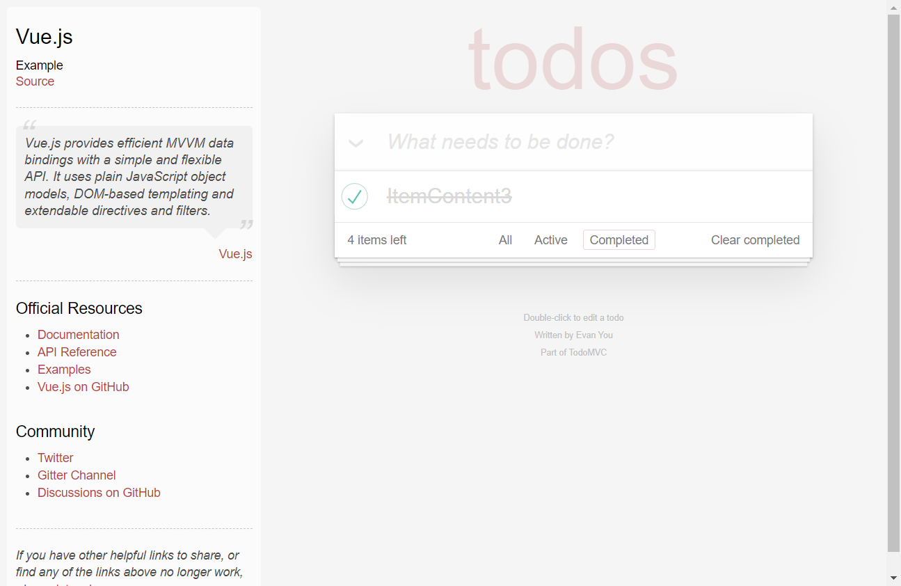Then MVC_USER edit the completed itemstepdef.Hooks.captureScreenshot(io.cucumber.java.Scenario)Screen39
When MVC_USER clicks on completed buttonstepdef.Hooks.captureScreenshot(io.cucumber.java.Scenario)Screen38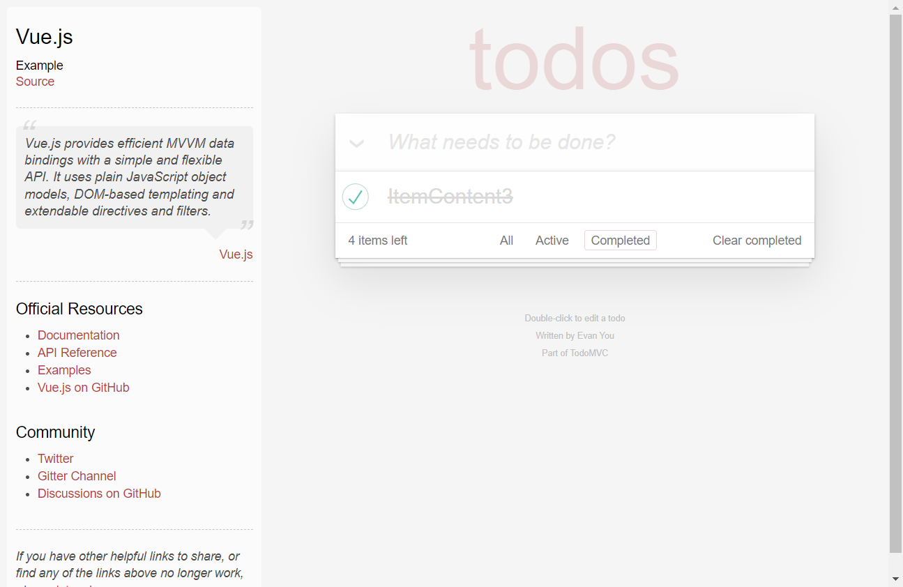Then MVC_USER edit the completed itemstepdef.Hooks.captureScreenshot(io.cucumber.java.Scenario)Screen39
-
@Functional
8 tests
@Functional
8 passedStatus Timestamp TestName Pass 19:03:07 PM MVC_USER should be able to add items in ToDo List and view the added item ToDo List Management.MVC_USER should be able to add items in ToDo List and view the added itemPass 19:03:13 PM MVC_USER should be able to delete items from ToDo List and validate the removal ToDo List Management.MVC_USER should be able to delete items from ToDo List and validate the removalPass 19:03:14 PM MVC_USER should be able to move the ToDoItem to completed status ToDo List Management.MVC_USER should be able to move the ToDoItem to completed statusPass 19:03:15 PM MVC_USER should be able to view the ToDoItems from all statuses and clear the completed Items ToDo List Management.MVC_USER should be able to view the ToDoItems from all statuses and clear the completed ItemsPass 19:03:17 PM MVC_USER should be able to add items of size as per the boundaries set ToDo List UI.MVC_USER should be able to add items of size as per the boundaries setPass 19:03:19 PM MVC_USER should be able to view all significant sections of UI ToDo List UI.MVC_USER should be able to view all significant sections of UIPass 19:03:20 PM MVC_USER should be able to refresh page and retain the list ToDo List UI.MVC_USER should be able to refresh page and retain the listPass 19:03:22 PM MVC_USER should be able to edit the item ToDo List UI.MVC_USER should be able to edit the item -
@Smoke
2 tests
@Smoke
2 passedStatus Timestamp TestName Pass 19:03:07 PM MVC_USER should be able to add items in ToDo List and view the added item ToDo List Management.MVC_USER should be able to add items in ToDo List and view the added itemPass 19:03:13 PM MVC_USER should be able to delete items from ToDo List and validate the removal ToDo List Management.MVC_USER should be able to delete items from ToDo List and validate the removal -
@UI
1 tests
@UI
1 passedStatus Timestamp TestName Pass 19:03:19 PM MVC_USER should be able to view all significant sections of UI ToDo List UI.MVC_USER should be able to view all significant sections of UI -
@Bug
1 tests
@Bug
1 passedStatus Timestamp TestName Pass 19:03:22 PM MVC_USER should be able to edit the item ToDo List UI.MVC_USER should be able to edit the item -
@Usability
2 tests
@Usability
2 passedStatus Timestamp TestName Pass 19:03:19 PM MVC_USER should be able to view all significant sections of UI ToDo List UI.MVC_USER should be able to view all significant sections of UIPass 19:03:20 PM MVC_USER should be able to refresh page and retain the list ToDo List UI.MVC_USER should be able to refresh page and retain the list -
@Boundary
1 tests
@Boundary
1 passedStatus Timestamp TestName Pass 19:03:17 PM MVC_USER should be able to add items of size as per the boundaries set ToDo List UI.MVC_USER should be able to add items of size as per the boundaries set
Started
Mar 1, 2023 07:03:02 PM
Ended
Mar 1, 2023 07:03:24 PM
Features Passed
2
Features Failed
0
Features
Scenarios
Steps
Timeline
Tags
| Name | Passed | Failed | Skipped | Others | Passed % |
|---|---|---|---|---|---|
| @Functional | 8 | 0 | 0 | 0 | 100% |
| @Smoke | 2 | 0 | 0 | 0 | 100% |
| @UI | 1 | 0 | 0 | 0 | 100% |
| @Bug | 1 | 0 | 0 | 0 | 100% |
| @Usability | 2 | 0 | 0 | 0 | 100% |
| @Boundary | 1 | 0 | 0 | 0 | 100% |